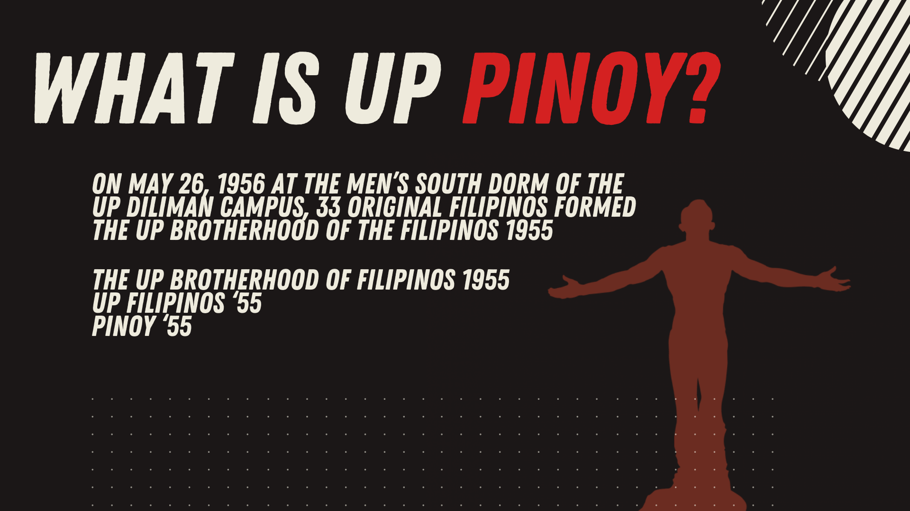

The planning materials trace the brotherhood’s formation to May 26, 1956 at the Men’s South Dorm of the UP Diliman campus.
UPBF 55
A historic brotherhood at UP Diliman, built on fellowship, character, and continuity.
The UP Brotherhood of the Filipinos 55 stands as a long-standing community within the University of the Philippines Diliman, shaped by shared heritage, enduring brotherhood, and a commitment to growth that extends from campus life into professional and public service.

The organization’s founding story is anchored in a clearly remembered beginning, giving the brotherhood a strong sense of continuity and identity.
Its public identity is inseparable from the university: academic life, campus community, and fraternity across batches and generations.
Who we are
A brotherhood shaped by heritage and directed toward meaningful contribution.
UPBF 55 is publicly presented as a fraternity that values belonging, maturity, and responsibility. Its story is not only about founding dates and old photographs, but about the kind of relationships it seeks to cultivate: relationships built on trust, counsel, loyalty, and long memory.
The planning materials also reflect the brotherhood’s historic roots in serving the male Bisayà student community of UP Diliman while building programs that benefit its members, strengthen the organization, and contribute to Philippine society more broadly.

Mission and values
Brotherhood that is meant to be lived, not merely stated.
The materials define UPBF 55 through a mission of enriching campus life and through values that place character at the center of fraternity life.
Campus life with depth
To provide meaningful opportunities that enrich the UP Diliman experience and make fraternity life an avenue for support, growth, and continuity.
Members are called to listen well, give counsel with sincerity, and assist one another in a culture of real camaraderie.
Loyalty is expressed through fairness, truthfulness, and a steady commitment to one another in both word and deed.
Determination means seeing worthwhile tasks through, whether they are difficult, ordinary, immediate, or long in the making.
Heritage and continuity
From archival portraits to present-day gatherings, the story remains active.
A credible fraternity website should make its continuity visible. UPBF 55’s materials do that through historic group photographs, milestone images, and present-day activity slides that show the brotherhood as a living network.


Recent activity
Contemporary images that show the brotherhood in motion.
Recent materials highlight fellowship, service, and alumni connection — proof that the fraternity’s heritage continues to be expressed in present-day work and gatherings.


Selected notable brods
View the full alumni feature list
A network that reaches business, design, medicine, public service, and industry.
The planning deck highlights distinguished brods whose careers underscore the breadth of the fraternity’s alumni network and the long-term value of intergenerational connection.
Dr. Claver Ramos
Featured as one of the 33 original founding members, a José Rizal Memorial Awardee in clinical practice, and the first president of the National Kidney Foundation of the Philippines.
Wally Liu
Highlighted in the materials for leadership in engineering and enterprise, including his work as CEO of Primary Structures Corp.
Kenneth Cobonpue
Recognized in the deck as a multi-awarded Filipino industrial designer and manufacturer.

Get in touch
Reach out to UPBF 55.
For general inquiries, alumni correspondence, institutional coordination, or questions from members of the UP community, you may send a message through the form below.
What to include
A clear introduction, your UP Mail address, and the purpose of your message will help the right person respond more efficiently.